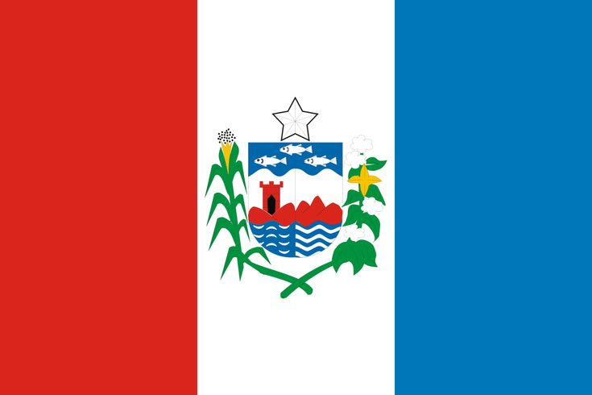

Alagoas
Alagoas é um pequeno estado do nordeste brasileiro cujo litoral tropical é marcado por praias de areia branca repletas de palmeiras, lagoas cristalinas e recifes de corais. Em Maceió, sua capital, estão localizadas as famosas praias Pajuçara e Ponta Verde, com hotéis, bares e restaurantes. Os recifes de corais decoram o litoral ao norte de Maceió que, por isso, tem o apelido de Costa dos Corais.

A região que hoje é ocupada pelo Estado de Alagoas foi alvo de disputa entre franceses e holandeses.
As primeiras investidas ocorreram por parte dos franceses, que invadiram a região no início do século XVI.
Somente em 1535, a Coroa Portuguesa expulsou os invasores e retomou o espaço em ações comandadas por Duarte Coelho, que era o donatário da capitania de Pernambuco.
A estratégia de Coelho foi incentivar o plantio de cana-de-açúcar e a construção de engenhos na região. Ainda assim, os holandeses promoveram invasões a partir de 1630. A retomada pelos portugueses ocorreu em 1645.
A autonomia de Alagoas ocorreu em 1706, quando foi elevada a comarca e, em 1817, a capitania. O estado ganhou a primeira Constituição em 11 de junho de 1891.
Capital: Maceió
Governador: Paulo Dantas
População: 3,128 milhões (2022)
Clima: Tropical As
Cód. ISO 3166-2: BR-AL
Economia: 2021
Fuso horário: UTC -3
"O estado de Alagoas dispõe de uma rica cultura, formada a partir da influência de indígenas, europeus e africanos. Entre as formas de manifestação cultural mais populares no estado estão os trabalhos manuais, como os bordados, e o artesanato realizado com matérias-primas, como fibra de bananeira, palha, cascas de coco, madeira e outros.
Algumas das festas populares do estado são: Reisado, Cavalhada, Guerreiro, Caboclinhos, Festa do Mar, Peja e outras. A gastronomia alagoana possui uma grande variedade de preparos, muitos dos quais levam em sua receita os frutos do mar. Um dos pratos típicos de Alagoas é o sururu de capote, feito com parte dos mariscos na casca e leite de coco.
Além das belas praias e paisagens naturais que são grandes atrativos turísticos, como é o caso de Maragogi, Alagoas possui lugares históricos tombados como patrimônio cultural do Brasil. Um deles é a Serra da Barriga, considerada também patrimônio do Mercosul em 2017. Foi lá que se estabeleceu a sede do Quilombo dos Palmares, entre o final do século XVI e século XVII, considerado o maior quilombo do país e da América Latina.